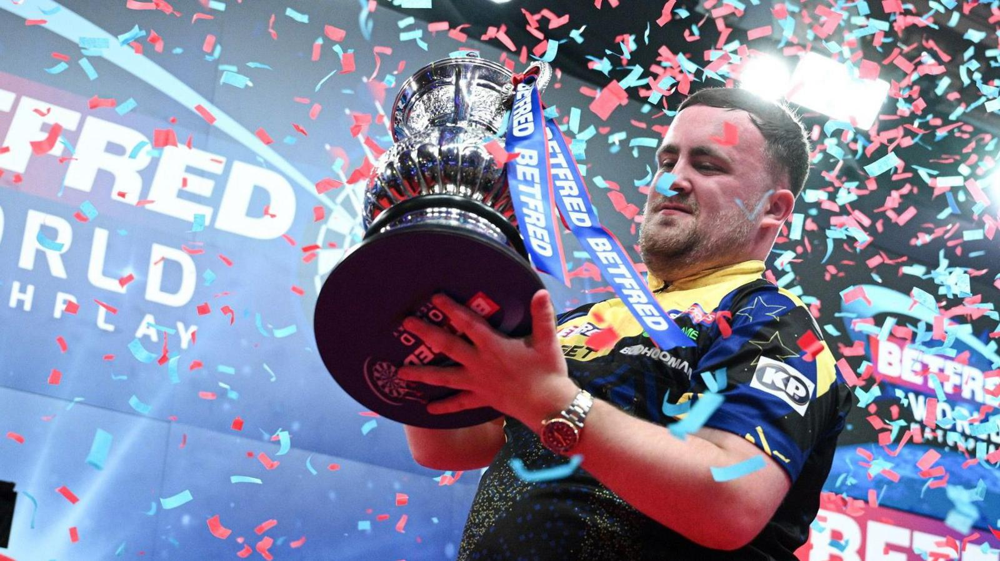

A nyár legfontosabb viadala a patinás blackpooli Winter Gardensben, amelyet hagyományos leg-formátumban játszanak, és a világbajnokság után a második legnagyobb presztízzsel bír.
Az év hatodik nagy tornája.
World Matchplay történetének legmagasabb döntős átlagát, 111,53-as átlagot dobott Littler, és az új tornaátlag rekordja is az övé, ami 111,04. A Nathan Aspinall elleni mérkőzésén egy tökéletes 9 nyilas leg-et is elért.
Július közepe
Blackpool - Winter Gardens (Anglia)